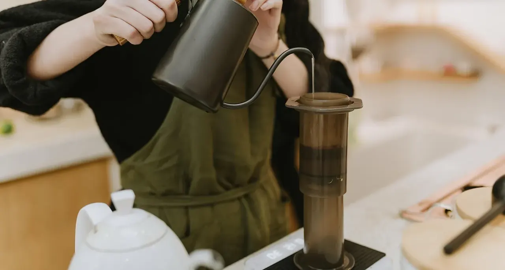

背景は生成イメージです
FREE CONSULTATIONおまかせ受電AI 無料相談会（事前登録受付中）
手が離せない時間の
電話、どうしてますか。
電話の種類ごとに、AIが受けるか人につなぐかを選べる受電AIの相談会です。自店の電話のどれを任せられるかを、一緒に整理します。
日時・形式・定員は調整中です。決まり次第ご案内します。
CONTENTS
相談会では、自店の電話を
4つの順で整理します。
製品の説明を聞くだけの場ではありません。お店にかかってくる電話を一緒に書き出し、どこまで任せるかを決めていきます。

- 01
かかってくる電話を
用件ごとに分ける予約、営業時間や道順の問い合わせ、営業電話、取引先からの連絡。自店にどんな電話が来ているかを書き出します。
- 02
AIに任せる電話と、
人に残す電話を決める用件ごとに、AIが受けるか、スタッフにつなぐかを決めます。迷う電話は人に残す、という決め方で構いません。
- 03
今の番号のまま使えるか、
通知先はどこかを確かめるお使いの電話番号で使えるかどうかと、出られなかった電話をどこへ知らせるか（LINEなど）を確認します。
- 04
無料モニターの
条件を知る先着30社ほどの無料モニターについて、モニター期間の費用と、申込時にご案内する条件をお伝えします。
受電ルール
業種：美容室- 用件受け手次の処理
- 予約の希望人出られないときはLINEへ通知
- 営業時間・道順・料金AIお店の情報で案内
- 営業電話AIスタッフにはつながない
- 用件が分からない電話人迷ったら人へ
- 営業時間外の予約AI仮受付。確定はスタッフ
PRODUCT
電話の種類ごとに、
AIか人かを選べます。
すべての電話をAIに渡すのではなく、用件ごとに受け手を分ける受電AIです。どこまで任せるかは、お店が決めます。
- 01
用件ごとに、AIか人か
予約は人、営業電話はAI。迷う電話は人に残す、という分け方ができます。
- 02
お店の情報で案内
スプレッドシートに登録した営業時間・道順・料金をもとに、AIが質問に答えます。
- 03
出られないときはLINEへ
出られなかった電話はLINEでお知らせ。営業時間外の予約の希望はAIが仮受付し、確定はスタッフが行います。
FIT CHECK
全部のお店に、
必要なわけではありません。
相談会の前に、自店が当てはまるかを見てください。向いていないお店に、無理におすすめはしません。
FIT
向いているお店
- 営業中に電話が鳴ると、手が止まる
- 営業電話が多く、そのたびに出ている
- 営業時間外の予約の電話を取りこぼしている
ひとつでも当てはまれば、相談会で一緒に整理できます。
NOT FIT
向いていないお店
- 電話がほとんど鳴らない
- すべての電話に、店主が自分で出たい
- 予約の確定までAIに任せたい確定はスタッフが行う作りのためです。
当てはまるお店には、今は必要ないはずです。
PRE-REGISTRATION
まずは、相談会の案内を
受け取ってください。
日時・形式・定員は調整中です。事前登録いただいたお店に、決まり次第ご案内をお送りします。
- 01相談会の参加費は無料です
- 02無料モニターは先着30社ほど。モニター期間は初期費用0円・月額0円
- 03通話料・期間・対象範囲などの条件は、申込時にご案内
正式な料金は調整中です。
HOW TO REGISTER
お問い合わせフォームで、
事前登録してください。
ライトアップのお問い合わせフォームを開き、お問い合わせ内容に「相談会の事前登録」とお書きください。
あわせて、次の3つを書いてください
- 店名お店の名前
- 業種飲食店・美容室・サロン・クリニック・小売など
- 困っている電話例：営業中にかかる予約の電話、営業電話が多い など
日時・形式・定員は調整中です。決まり次第ご案内します。